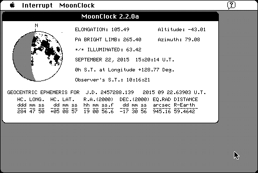

Download
MOONCLOCK_220a_68K.zip (340K) MOONCLOCK 2.2.0a repackaged into a zipped hfs disk image and checksum file. The disk image can be mounted with Mini vMac.
MOONCLOCK_220a_68K.sea.hqx (504K) MOONCLOCK 2.2.0a in the original format.
copyright: sofTouch APpLications
mod date: Jan 15, 2002
license: shareware
official url :
sofTouch APpLications - MOONCLOCK 2.2.0
"Produces a continually updating, real-time graphical representation on the visual aspect of the moon." Looks to be more technical and accurate than MacMoon, though less Mac-ish. Requires System 7. By Glenn Schneider.

If you find these downloads useful, please consider helping the Gryphel Project, which hosts them.
Here are the md5 checksums for the downloads, signed with Gryphel Key 5:
--------- GRY SIGNED TEXT --------- b0a6619207cf24db1ee63a3e6eea7257 MOONCLOCK_220a_68K.zip 6a09c6dfd638b362e20e3917ddeba1c5 MOONCLOCK_220a_68K.sea.hqx ------- BEGIN GRY SIGNATURE ------- Gry/4Xa8CFcUzxdN/PHymm2+uI2hmlojWajl2sgFAXY2Srm60nuOgHMAgcWKLRWA hD8ZqS/EPeW+CGKV5dTBJzPdeGgdYhJttci7jHHfckBHsFXTOBh9rT/aSNJnIYcr UI55YlLMRSZHkW3vgTp5N52c6HxpYUbbLS08bOw09xHeIiX0T1Uvzc66aty/2Fcb -------- END GRY SIGNATURE --------